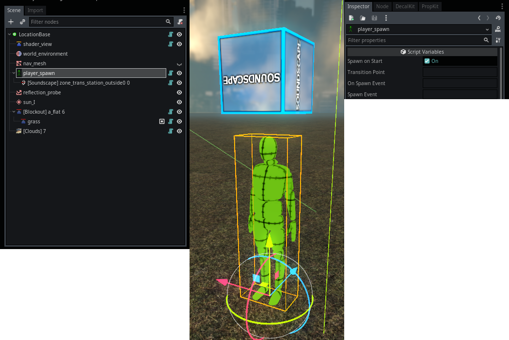

Module: player_controller
Documentation last edited: October 23, 2025 at 14:33 UTC
Description
The player himself. Or themselves. Either way, this is a player thing. This is a pretty complex module, but mainly it consists of code, so we'll break it down file-by-file.
Script Structure
.
├── globals
│ ├── global_data.gd
│ ├── pc_water_list.gd
│ └── player_stats.gd
├── mouse_look.gd
├── nodes
│ ├── ladder.gd
│ ├── player_spawn.gd
│ ├── player_teleport_pos.gd
│ └── water.gd
├── player_camera_motion.gd
├── player_main.gd
├── states
│ ├── state_debug_fly.gd
│ ├── state_ladder.gd
│ ├── state_walk.gd
│ └── state_water.gd
├── stats_adder.gd
└── weapon_handler.gd
Player Main Script
"./player_main.gd"
So this is a class. A big one. Not the biggest one in the game, but hey (I didn't check anyway). This ain't the typical
"player.gd"
that would be the biggest thing in the game. Alright, it doesn't change the fact it is pretty huge. It is huge because there's a lot of systems that player would need to interact with.
"player_main.gd"
is basically some kind of hub for all kinds of systems. It does the following:
- Takes
"res://modules/player_controller/assets/scene/player.tscn"
and initialized the shit out of it. Like, the scene has *some* nodes, but the rest happens in the code.
- Manages/controls separated movement states (walk, swim, ladder, debug flying).
- Uses
PlayerStateWalk
for walking/running physics.
- Uses
PlayerStateLadder
for ladder movement.
- Uses
PlayerStateWater
for swimming logic.
- Uses
PlayerStateDebugFly
for free flight debuggning mode.
- Directly manages player height transition.
- Used by
PlayerStateWalk
to tweak height for crouching.
- Processes picked objects physics and positioning.
- Processes location bounds check, resets the player's position if out-of-bounds (maybe I need to make an out_of_bounds location instead?)
- Controls camera hierarchy and transforms.
- Manages FOV adjustments from settings.
- Handles camera punch/shake settings.
- Coordinates multiple camera effects like suppression, low HP tremor, explosion wave.
- Initializes and updates all HUD elements, manages their visibility.
- Mainly just calls
HeadsUpDisplay
class for that.
- Processes the "mission failure" (death).
- Handles some logic related to crosshairs (like in
process_dealt_damage_info
function).
- Handles health regeneration logic.
- Initializes and handles the weapon system.
-
PlayerWeaponHandler
handles the inputs for weapons.
-
PlayerWeaponSystem
is providing an interface for weapons.
- Initializes mouse movement logic.
- Afterwards,
PlayerMouseLook
is handling the mouse movement logic to move the camera.
- Initializes post-processing logic.
- Uses
PostProcessingSystem
for this.
- Stores individual effect classes (
FlashbangPostProcessing
,
UnderwaterPostProcessing
, etc.)
- Stores and handles
Character
data.
- Handles footsteps with help of
Footstep
class.
- Handles some equipment/perk logic with help of
LoadoutSystem
.
- Handles save system's load/save functions to save its data.
Look, I know what you'll say.
You'll say it could've been more modular. Yes, it could've been. And I'll tell you to shut the fuck up and see the reality as it is - I just needed something that would've worked and something that wouldn't fuck with my mind too much while having not-so-much cross-script calls. So, you and me, we will work with this monolithic barely-separated monster because that's what life is.
Player Mouse Look
"./mouse_look.gd"
This is a simple class that handles the mouse movement logic to move the camera, there's nothing special here.
Player Camera Motion for motion blur
"./player_camera_motion.gd"
Kinda obsolete
This class is used for motion blur that isn't really a part of this game anymore. There are some left-overs in the code and it can be kinda restored, but why would you need it anyway? It wasn't really nice. It was buggy and fucky.
Player Weapon Handler
"./player_weapon_handler.gd"
A class that handles interaction with the weapon system. Keep in mind,
PlayerWeaponSystem
class is not a part of this module.
PlayerWeaponHandler
only "communicates" with the weapon system and handles some inputs. I'd say it isn't really necessary to exist, but it is what it is.
Player Stats Adder " ./stats_adder.gd"
Obsolete
So there was a fancy ass screen at the end of mission with all kinds of stats. It's no longer a working part of this game, there are still some left-overs that I'm too lazy to remove.
Autoloads
PlayerData
- basically exists just because I needed to write
PlayerData.get_player()
somewhere to get a player, that's kinda it.
PCWaterList
- just a simple list of all water sources, however it also can be used to make splashes.
PlayerStats
-
Obsolete
related to the forementioned player stats that aren't really a part of this game anymore.
Nodes
PlayerControllerLadder

A ladder node. Player enters an area, climbs up/down, etc. Forces the player to enter
PlayerStateLadder
. This thing is kinda self-explanatory, if you want to see more - take a look into source code. Works by setting the start and end points.
PlayerControllerWater

A water node. Player enters an area and starts swimming. Forces the player to enter
PlayerStateWater
. Works by setting the start and end points.
PlayerSpawn

A player spawn node. Spawns the player during the location initialization. It is worth mentioning that player truly "spawns" only once and their instance is reused across different locations to speed up the loading screen. Transition points can be set for transitions between locations. It can also be used alongside location events to either react to spawning or to forcefully spawn the player again.
States
PlayerStateWalk
- the common state when the player is just walking around.
PlayerStateLadder
- activated during climbing the ladder, simply turns the movement to movement alongside the defined line (which is defined by
PlayerControllerLadder
).
PlayerStateWater
- activated during swimming in the area of water defined by
PlayerWater
.
PlayerStateDebugFly
- activated with use of console commands like
"debug_fly"
.
General Information
Root directories list
assets, docs, src
Nodes
PlayerControllerLadder
PlayerTeleportPos
PlayerControllerWater
PlayerSpawn
PCWaterList
PlayerStats
PlayerData
PlayerMain
Classes
PlayerCameraMotion
PlayerWeaponHandler
PlayerStatsAdder
PlayerMouseLook
PlayerStateDebugFly
PlayerStateWater
PlayerStateLadder
PlayerStateWalk
Resources
None
Other Scripts
None